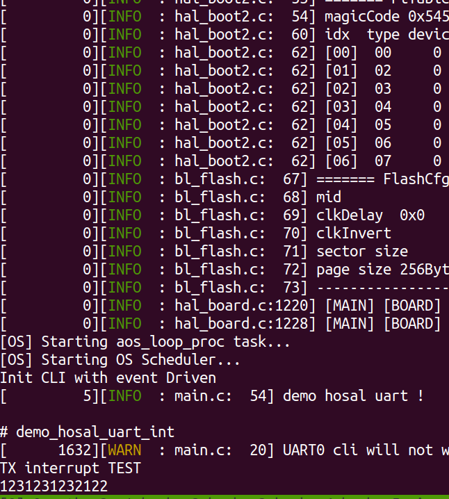

UART_INT
总览
本示例主要介绍通过UART0使用中断方式收发数据。
准备及使用步骤
- 使用步骤：
- 插入将板子的USB电源线，USB电源线默认连接UART0；
- 编译
customer_app/periperal/demo_uart工程并下载工程，编译命令：genromap <chip name>，<chip name>可选择BL602,BL702；- 打开一个串口终端窗口（波特率为2000000，用于接收和发送uart消息）；
- 串口终端输入
demo_hosal_uart_int，表示启动 UART_INT的demo；- 此时通过UART0输入任意字符，例如 "1231231232122" ，能够回显，表示说明演示成功。

应用实例
- 通过
HOSAL_UART_DEV_DECL接口定义一个uart_dev的uart设备，并初始化uart_id, tx_pin, rx_pin以及波特率为2000000。
/**
* Define a UART device,
* TX pin : 16
* RX pin : 7
* baud : 2000000
*/
HOSAL_UART_DEV_DECL(uart_dev, uart_id, 16, 7, 2000000);
- 通过
hosal_uart_init接口初始化硬件uart_dev设备。
/* Uart init device */
hosal_uart_init(&uart_dev);
- 通过
hosal_uart_ioctlHOSAL_UART_MODE_SET 接口设置UART中断开启,hosal_uart_callback_set设置中断的回调函数，最后通过``hosal_uart_ioctl`` HOSAL_UART_TX_TRIGGER_ON 开启TX传输，传输完成需要手动HOSAL_UART_TX_TRIGGER_OFF关闭TX中断，否则UART FIFO空会一直进入TX中断。
/* Configure UART to interrupt mode */
hosal_uart_ioctl(&uart_dev, HOSAL_UART_MODE_SET, (void *)HOSAL_UART_MODE_INT);
/* Set TX RX interrupt callback */
hosal_uart_callback_set(&uart_dev, HOSAL_UART_RX_CALLBACK,
__uart_rx_callback, &uart_dev);
hosal_uart_callback_set(&uart_dev, HOSAL_UART_TX_CALLBACK,
__uart_tx_callback, &uart_dev);
/* UART TX interrupt start */
hosal_uart_ioctl(&uart_dev, HOSAL_UART_TX_TRIGGER_ON, NULL);